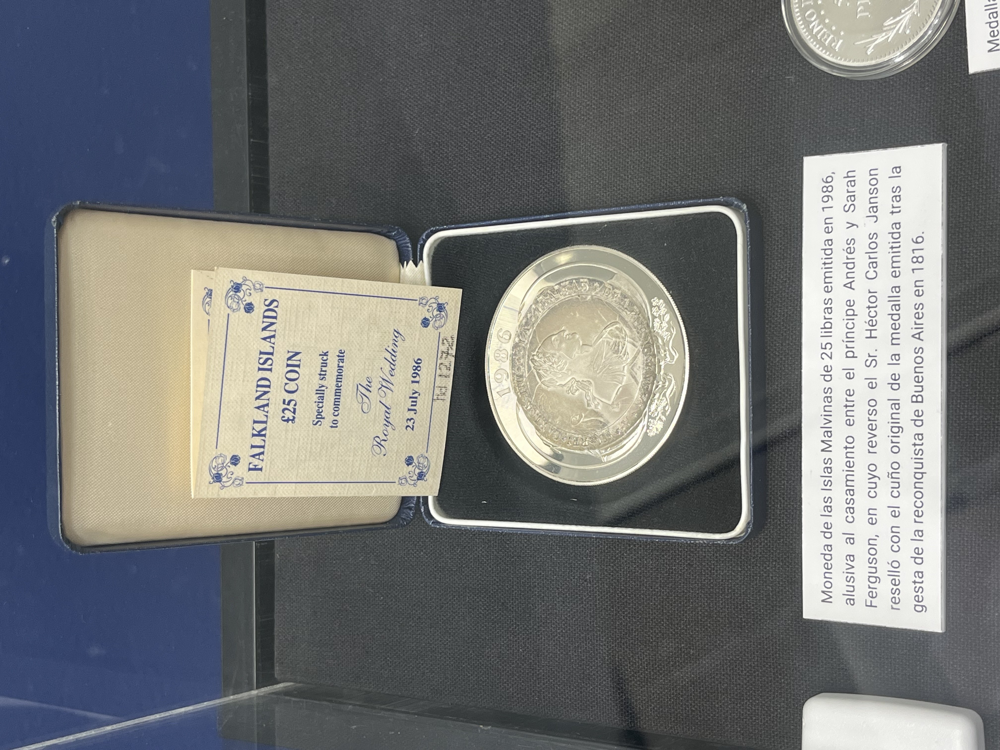

Visita al Museo del Banco Central. Participaron los alumnos de 5°A y 5º B.
Por Santiago Blanco y Agustín Tevez de 5°B
Los quintos años visitaron el Museo del Banco Central De La República Argentina (BCRA), para una excursión didáctica realizada dentro del marco A.C.A.P.. Fueron acompañados por nuestra directora de estudios Yanina Rumacho,
la profesora del área de economía y referente de las A.C.A.P., Griselda Orellano, y la tutora de ambos quintos, Karla Pérez.
El recorrido comenzó en la colección de H. C. Janson en donde observaron medallas y monedas antiguas con valores incalculables. Un ejemplo de estas es la moneda de dos escudos de oro acuñada en la ceca de Potosí en 1813,
de la que solo se conoce dos ejemplares en el mundo. Posteriormente a eso, ingresaron a la sala de los tesoros del mar, en la cual pudieron observar diversas monedas y tesoros que se hallaron en las profundidades del mar de diversos continentes (monedas de países tales como Japón, Perú, entre otros). Luego de contemplar estos tesoros, se dirigieron al primer piso, en donde estaba situada la sala 6. Una vez dentro, pudieron visualizar algunas medallas y monedas de oro y plata conmemorativas a diferentes acontecimientos de nuestra Nación y otras también. En la sala posterior, la guía mostró varias fotos y páginas en las que se veían diversas prestaciones en la historia del Banco Central.
Además, en dicha sala se encontraba “El gran libro de rentas y fondos públicos nacionales” y también se encontraba un cenicero hecho de oro ornamentado con una gema de topacio. Luego, en esa misma sala aprendieron cómo identificar los billetes y monedas falsificados; enseñaron varias formas de descubrir si el billete/moneda es falso, como por ejemplo, ponerla a contraluz para que se puedan identificar partes únicas que son casi imposible de realizar en una falsificación. Luego pasaron a una sala donde observaron los distintos tipos de cambios a través de la historia, como la yerba mate (antigua y paraguaya), las semillas de cacao u hojas de coca. También observaron las primeras monedas realizadas en el virreinato del Río de La Plata. Al principio estas eran moldeadas con el golpe de un martillo, pero en los años posteriores debido a muchas falsificaciones, se creó un nuevo método en el cual se observa una forma de seguridad que impedía la falsificaciones de las monedas ya que no se podían partir para generar más monedas (también se pesaban).
Posteriormente, avanzaron a la sala en la que pudieron observar unos de los primeros billetes de la historia argentina, entre ellos los billetes creados en la época de la lucha entre los Unitarios y Federales, como por ejemplo , uno creado por Juan Manuel de Rosas en el que proclamaba “Muerte a los salvages unitarios”. Luego pasaron a una sala en la que se encontraban los billetes más recientes de la Argentina como: los Australes, los pesos durante la época de la dictadura y los pesos ley 18188 además de ver algunos de los billetes de trueque y cheques antiguos . Además, les explicaron su cambio en el tiempo.
Luego abandonaron la sala y fueron a una nueva en donde vieron cómo se ven los billetes a contraluz y expuestos a luz ultravioleta, poniendo a prueba lo explicado anteriormente.
También vieron todos los billetes que se encuentran en circulación a día de hoy y también cómo son los métodos para eliminarlos, como quemarlos o cortar el papel.